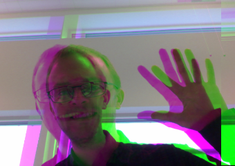
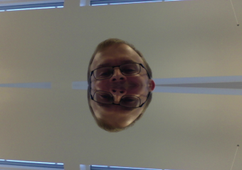

Green in blue
In this task you will use the
Canvas
getImageData
API to read each pixel of your video and write it back using
canvas.putImageData
Your goal is to:
- Replace each pixel's green channel with the green channel of the pixel 20 pixels (that's 4*20 == 80 components) to the right
The result should look something like the pixture below:
Bonus task: Can you make you video look like this:
Or like this?
